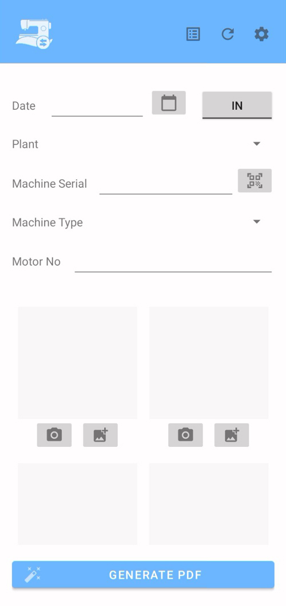
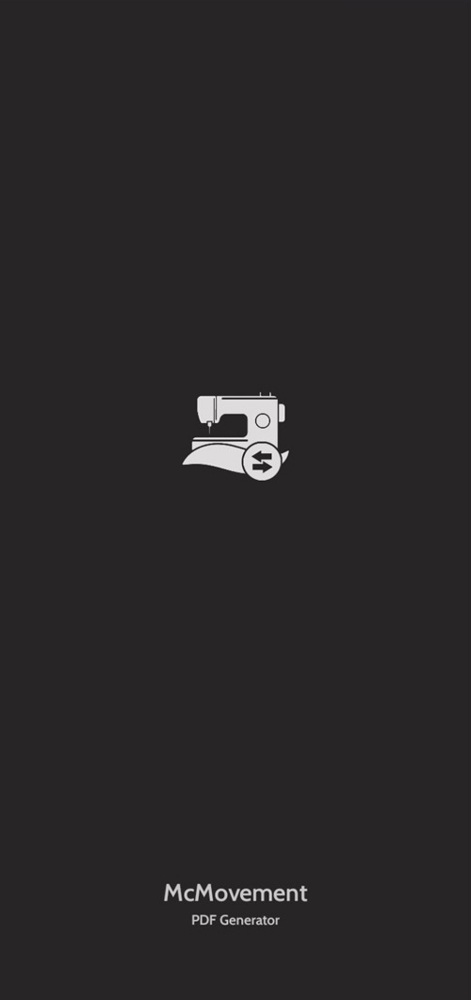
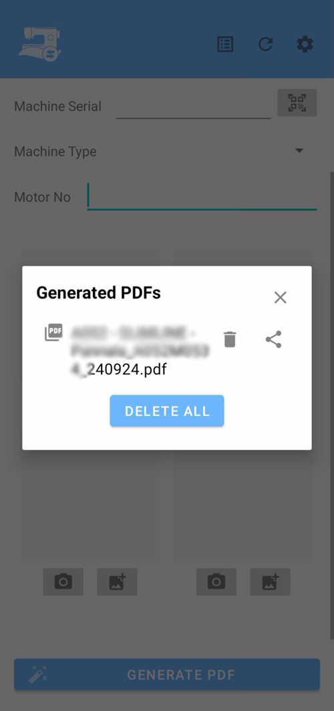
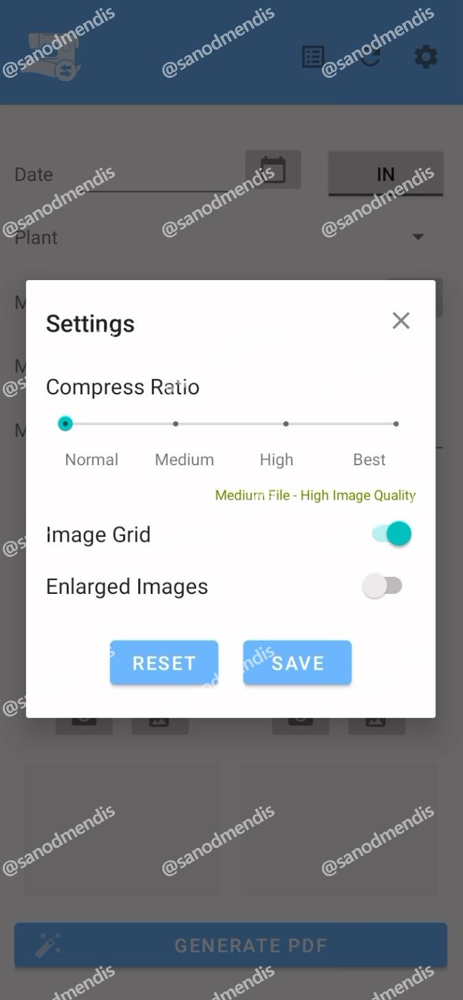

McMovement Tracker is a powerful Android application designed to log and manage machine movements in and out of facilities. Tailored for construction sites, warehouses and heavy equipment yards, the app generates professional PDF reports with all the relevant machine details and saves them securely in a local SQLite database.
Core Features

Main application interface✅ PDF Report Generation
Automatically generates clean, customizable PDF documents every time a machine is checked in or out. Includes machine details, timestamps, operator info and even an image if needed.
✅ Built-in Barcode/QR Code Scanner
Easily scan equipment barcodes using the integrated ZXing (Zebra Crossing) library for lightning-fast, reliable scanning.
✅ SQLite Data Storage
All machine movement data is stored in a lightweight local SQLite database for offline access and easy synchronization later.
✅ Customizable PDF Layouts
Users can modify what fields appear in the PDF, change logo/branding, or select from pre-set templates in the Settings menu.
✅ Image Integration with Glide
Capture and embed machine images into PDF reports using the efficient Glide (bumptech) image loading library.
Application Screens

Loading screen
Machine list viewSettings & Configuration

Settings and configuration panelThe settings panel provides comprehensive customization options for PDF generation, including template selection, branding modifications and field configurations. Users can tailor the app to their specific organizational needs and reporting requirements.
Future Roadmap Ideas
- Cloud Sync with Firebase / AWS
- Web dashboard for remote access to PDF logs
- NFC tag support for equipment check-in/out
- PDF signing with digital signatures
- Scheduled daily/weekly PDF reports